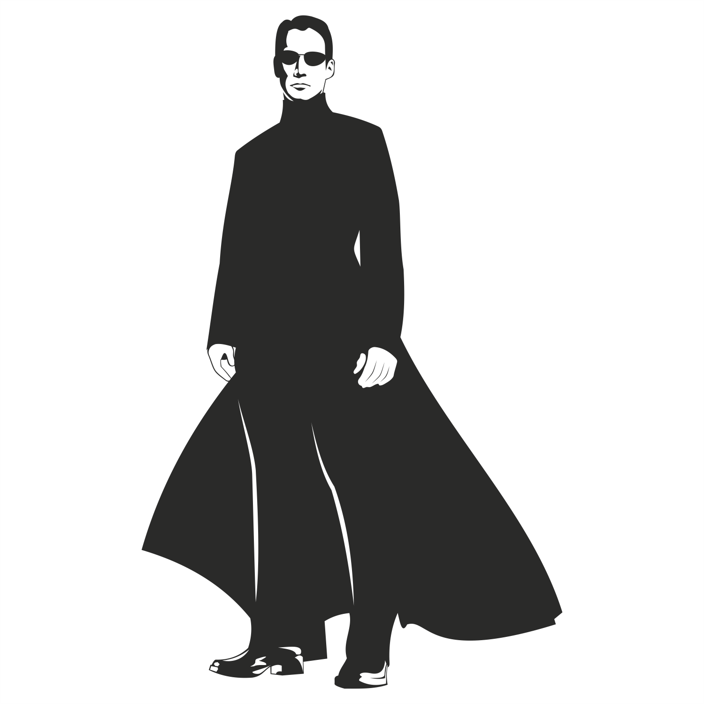
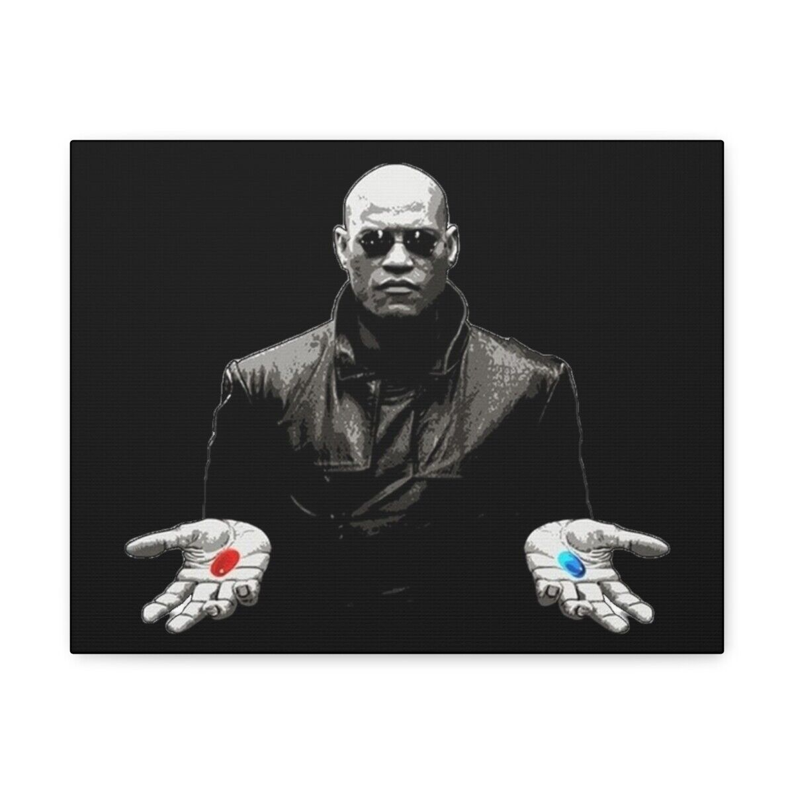
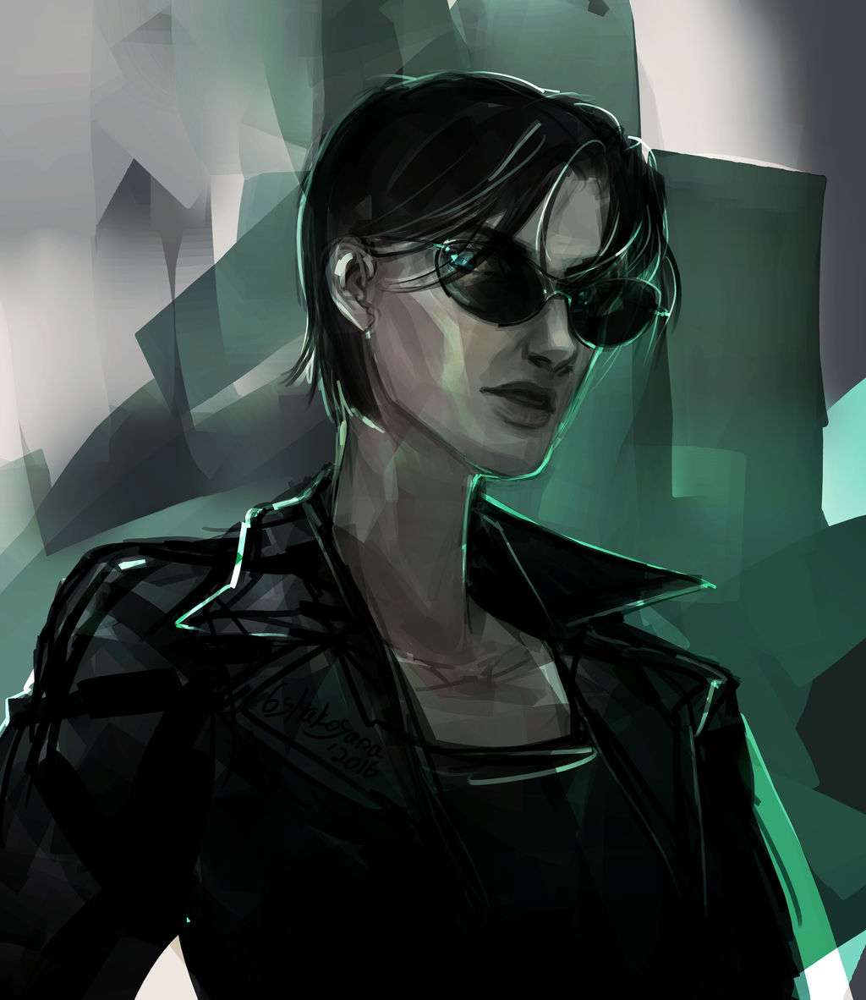
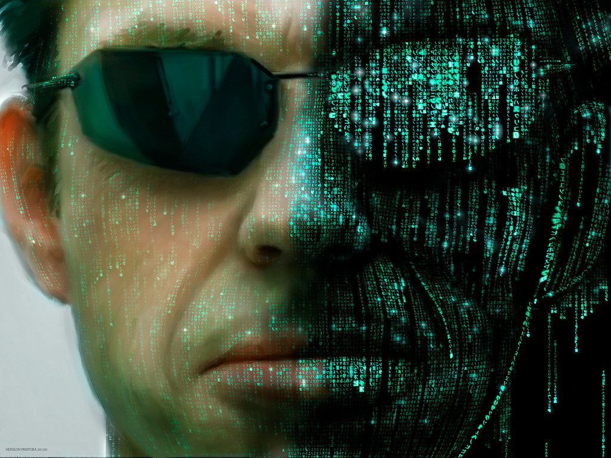
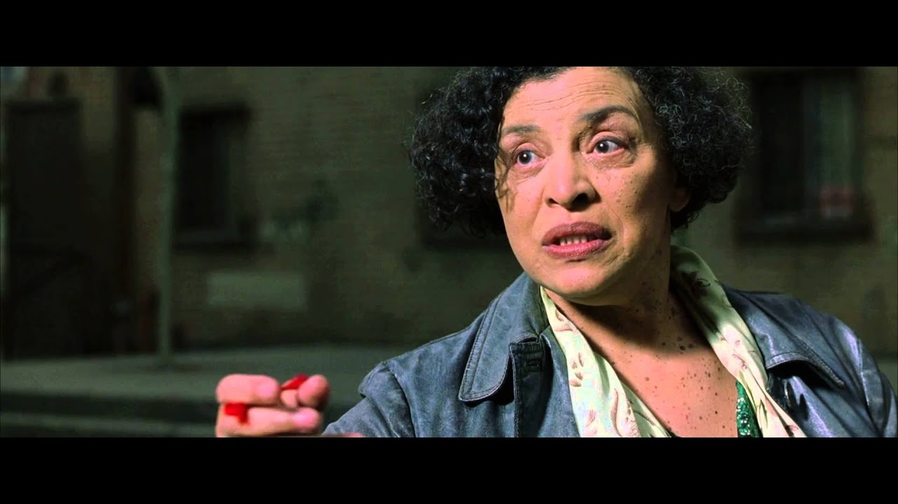

Unidad 2 Actividad 4.2 :: Tema(Personajes)
The Matrix
▶NEO

Nombre del hacker : Nick
Nombre Real: Thomas A. Anderson
Edad: 37 (Trilogía Original)
Fecha de nacimiento 11 de marzo de 1962 (Matriz)
romances Trinity
Lugar de trabajo MetaCortex - Anteriormente
Profesión programador informático hacker desarrollador de juegos
▶MORFEO

Nombre del hacker: Morfeo
Nombre real: Daniel (posiblemente)
Romances Niobe (anteriormente)
Entidad Capitán del Nabucodonosor
Altura 1,83 m
Color de los ojos
Afiliación Resistencia
▶TRINITY

Primera presentación The MATRIX
Última aparición Las resurrecciones de Matrix
Apodo: Tiffany, Tiff, Trin
Nombre del hacker: Trinity
Edad: 33 ( Trilogía original )
Romances Neo
Entidad Primer oficial del Nabucodonosor
▶AGENTE SMITH

Primera presentación The MATRIX
Última aparición Las resurrecciones de Matrix
Nombre del Hacker: Bane
Altura 1,88 metros
Color de pelo Marrón
Color de los ojos Azul
Entidad Agente de la Matrix
▶ORACULO

Apariciones Matrix Matrix Reloaded Las revoluciones de Matrix...
Estado Eliminado
Género Femenino
Color de los ojos Marrón
Color de pelo Negro
Afiliación El Oráculo
Tipo de exilio Programa